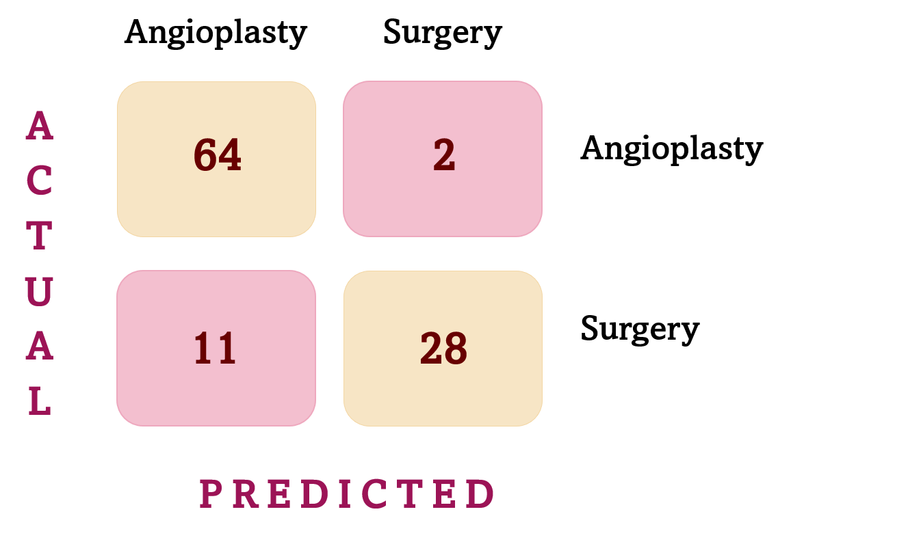
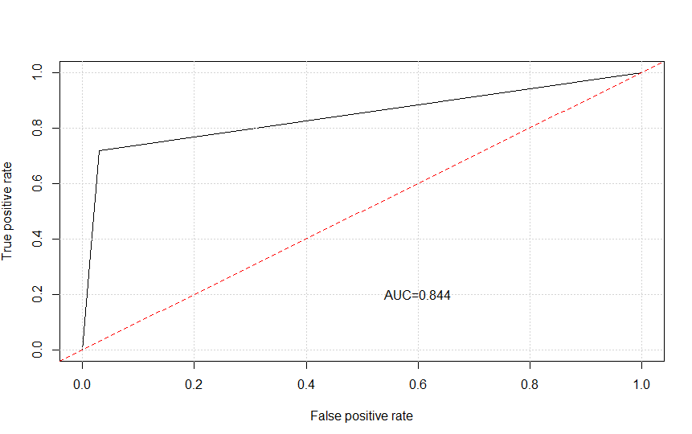

Cardiac events predictor
Introduction
In order to analyze the given dataset, we have chosen as the focus of our work to evaluate the type of procedure that a patient receives according to different variables that are related to the procedure, which can be surgery or an angioplasty. We decided to study the patients’ gender, age, diabetes condition, pulmonary hypertension, coronaropathy, obesity condition and admission’ reasons in relation to the procedure performed to that same patient. The objective of our dataset analysis is to improve the prediction of cardiac events and provide new, relevant information by combining different variables.
Data Analysis
Gender analysis
Sex was analyzed as females are associated with a higher ventricular diastolic stiffness. It was also found that women have elevated rates of diastolic dysfunction.
Women and men percentages
We analyzed the amount of male and female patients in our dataset.
Procedure according to gender
Several studies found that among patients with myocardial infarction, women have a worse outcome and greater morbidity and mortality than men after receiving angipoplasty, and this is due to a higher incidence of risk factors (Sex influency in the results of angioplasty for myocardial infarction treatment).
Diabetes analysis
Diabetes is a major risk factor for coronary heart disease. This is associated with high cardiovascular mortality: more than three out of four diabetics who die do so from a cause related to atherosclerosis and in 75% of these cases from coronary heart disease. They have a greater number of vessels affected and a higher rate of post - angioplasty restenosis.
Percentage of diabetic patients
We analyzed diabetic and non diabetic population.
Procedures of diabetic patients
In patients with diabetes the best option according to Drs. Bernardo Layerle, Washington Vignolo is angioplasty, since it significantly reduces the need for a new, short-term angioplasty in high-caliber vessels. Surgery is considered only in cases of involvement of several vessels, since it has a significantly worse result in diabetics than in non-diabetics.
Age analysis
The octogenarian patients’ group, whose ages start from 80 years old, is constantly growing, and as a consequence their life expectancy also increases.
The high prevalence of coronary artery disease in this group, along with the continuous development of endovascular treatment through coronary angioplasty, have resulted in a more frequent use of this type of procedure in older patients, according to a study led by Italian Hospital of Buenos Aires. These patients also represent the group with the higher risk at revascularization by surgery, which contributes to the coronary angioplasty procedure increase in this population.
Pulmonary hypertension analysis
Pulmonary hypertension is a hemodynamic condition which involves pathology changes in vasculature, with a posterior increase of pulmonary vascular resistance and arterial pressure.
Patients with pulmonary hypertension
According to an article published in The British Journal of Radiology , there is a wide range of potential complications associated with pulmonary hypertension, for example, right heart failure and pericardial effusion and tamponade. Therefore, it has been included in this analysis as a patient with this condition should follow a different protocol.
Procedure of people with pulmonary hypertension
Procedures of patients with pulmonary hypertension were compared with those without this condition as it is shown in this graphic. As seen, pulmonary hypertension patients have a tendency to undergo surgery rather than angioplasty.
Coronopathy analysis
Nowadays, mortality and morbidity associated with cardiac surgeries has decreased. Therefore, surgical therapy to older patients with reconstructible coronary artery disease has incremented by 50%. Unfortunately, older patients referred for cardiac surgery tend to have advanced disease as triple-vessel disease, left main or main equivalent disease, poor left ventricular function as an study led by Drs. Vanita Ahuja, Ronnie A. Rosenthal shows.
People with coronopathies
We first analyze the population with one, two, three or none blood vessels involved, as it is shown on the graph.
Procedure of people with coronopathies
As the number of blood vessels involved increases, it is more likely for the patient to have a surgery. However, modern PCI technique and devices help patients with triple vessel disease of relative low Syntax score get rid of surgery.
Obesity analysis
Obese patients are at increased risk of infection within 30 days after receiving heart bypass surgery, according to a series of studies conducted by researchers at the University of Alberta at the College of Rehabilitation Medicine.
People with obesity
Compared with patients with normal body mass index, they found that patients with a BMI greater than 30 were 1.9 times more likely to report infections after bypass surgery.
Procedure of people with obesity
Additionally, they found that 88% of patients who received surgery were classified as obese, compared with 55% of patients who received an angioplasty. They explain that the risk of infection after CABG may explain why obese patients are more likely to receive PCI. Given that only 3.9% of the dataset patients are obese, this explanation cannot be clearly seen in our analysis. Beyond the fact that the percentage of obese patients who receive surgery is higher than the percentage of obese patients who receive an angioplasty, the total number of obese people that make up the sample is too small to draw any further conclusions.
Reasons for admission analysis
The reasons for admission that we are interested in analyzing are the programmed ones, and the non-SST ACS (acute coronary syndrome), since they are those in which there is time to think about which procedure is more convenient for the patient, obtaining more reliable data.
Patients’ admission reasons
The graph shows a greater number of patients whose admission has been programmed, and the procedure preference of each case can be seen with the naked eye.
Procedure according to schedule admissions
Chronic obstructive pulmonary disease analysis
Chronic obstructive pulmonary disease (COPD/EPOC) is the third leading cause of death.
EPOC population
More than 11 million Americans are diagnosed with COPD and it is estimated a 13 million people live with this undiagnosed disease (COPD Advanced Patient Management. CME Resource Center). Here we identify population with COPD in our dataset.
Procedure of patients with EPOC
In this graphic we analyze patients’ procedures according to if they have COPD disease or not.
Interpretation
Percentage of procedure of patients with 3/2/1 injured blood vessels
According to a clinical study carried out in Mexico by Carlos A Solis-Olivares and Juan M Solis-Soto, in the last three decades, percutaneous coronary intervention (PCI) has overtaken coronary artery bypass grafting (CRVC) as the preferred treatment modality for atherosclerotic ischemic heart disease (IC) in the world. The effectiveness of PCI in the treatment of significant myocardial ischemia caused by focal occlusion of one or two coronary vessels is unquestionable. However, its results in the treatment of multivessel coronary disease (CVD), defined as the obstruction of three coronary arteries or of two with involvement of the proximal portion of the left anterior descending artery (LAD), have been less satisfactory.
An observational, ambispective study was conducted, with longitudinal and comparative follow-up of a number of patients with a diagnosis of CVD treated by CRVC. The objective of this study was to compare the clinical evolution of these patients after their percutaneous or surgical revascularization. Finally, the results indicate that those patients with a higher cardiovascular risk, more complex coronary anatomy and trivascular disease, generally receive treatment with CRVC, with PCI being used more frequently in patients with lesions of two coronary arteries.
The next graph is a summary of some of the variables analyzed before.
Predictor
Variables election
Variables were chosen taking into account the information previously analyzed. However, not all variables were selected in order to generate the predictor. Pulmonary hypertension, obesity or chronic obstructive pulmonary disease are some examples. This variables do not contain enough information to make an accurate prediction.
Ages were separated into intervals of young adults (0-30 years old), adults (31-55 years old) and elderly (56-100 years old). It was considered that elderly population are in a higher risk during a surgery, that is why major procedure in this age interval is angioplasty.
Number of injured blood vessels was considered as analysis showed patients with one blood vessel involved have a major tendency to experience angioplasty rather than surgery. In contrast, three injured blood vessels were related to patients undergoing surgery.
It was kept into account that the admissions’ reasons with more prevalence were coronary programations, valv. programations and non-SST ACS (acute coronary syndrome). Predictions were made with these three admissions’ reasons.
Patients’ conditions such as diabetes are considered for predictions as is categorized as high risk factor and must be handled minutely.
Model election
We have chosen the Random Forest Model for the predictor because it was considered the most suitable for the dataset. Once generated the model, it was tested using the data of 346 patients. From these, our model predicted surgery with an error of 24% while angioplasty was predicted with an error of 9%.

AUROC curve
The AUROC curve represent the ratios between false positives and false negatives. It is used to measure the efficiency of the model using the confusion matrix and it is done in the test data.
